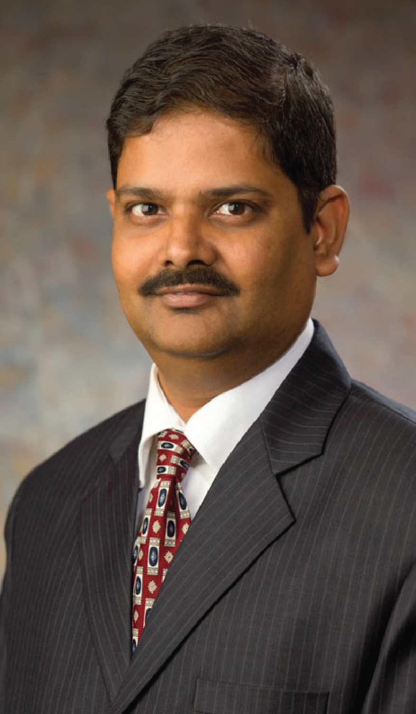

Palash Bera is an Associate and Father Davis professor at the Operations and IT Management department at Chaifetz school of Business, Saint Louis University. He is also the Department Chair and the Data Practicum Director of the Full-Time MBA program. His research interests are in information systems analysis and design, data analytics, and data visualization. He specializes in methods and techniques (e.g. eye tracking) on doing empirical research in systems analysis. His current research focuses on the intersection of machine learning and agile requirements analysis. He has published in reputed information systems journals such as MIS Quarterly and Information Systems Research.